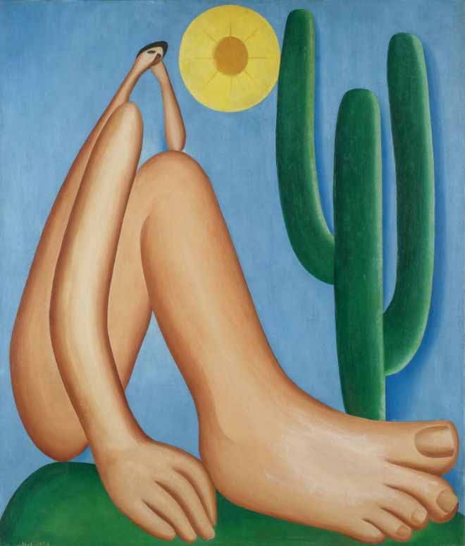

Abaporu
Tarsila do Amaral
Os Retirantes
Cândido Portinari
Guernica
Pablo Picasso
As Meninas
Jan Vermeer
Medusa
Caravaggio
Noite Estrelada
Vincent Van Gogh

O Casal Arnolfini
Jan van Eyck
La Danse
Matisse

O Beijo
Gustav Klimt

Composição II
Piet Mondrian

A persistência da Memória
Salvador Dalí
O Grito
Edward Munch
O Filho do Homem
Magritte

Nenúfares
Claude Monet
A Fonte
Marcel Duchamp